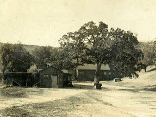
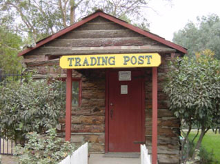

Circa (1930)

Trading Post (Today)
The Trading Post is staffed by volunteers from the Friends of Hart Park and Museum. All proceeds are used by the friends to support the park.
Friends of Hart Park and Museum is a California Non-Profit Corporation Section 501 C-3